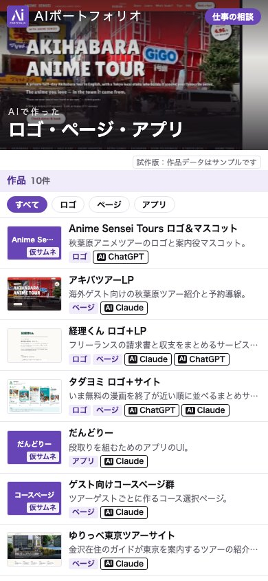
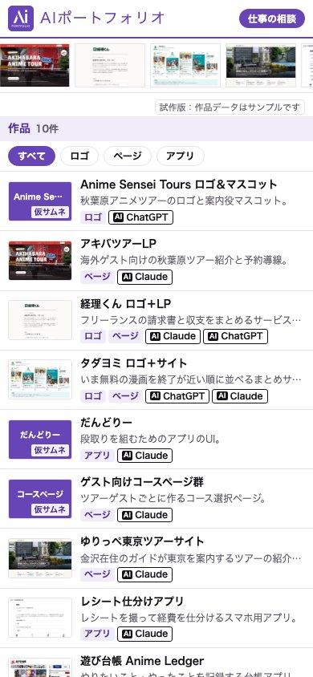
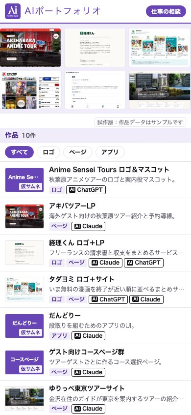
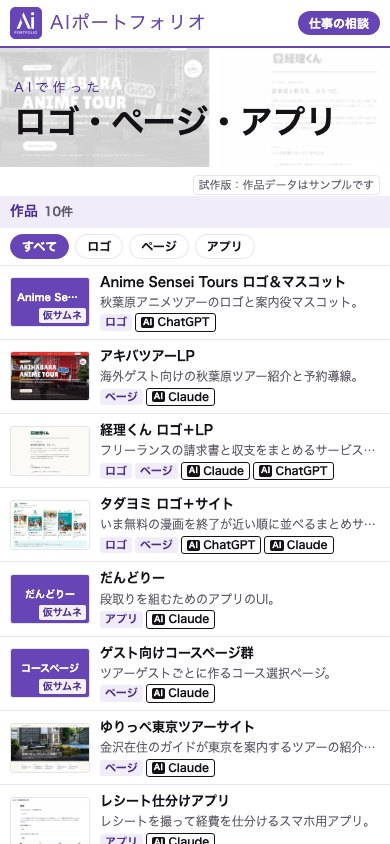
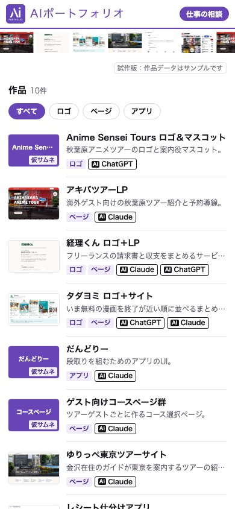
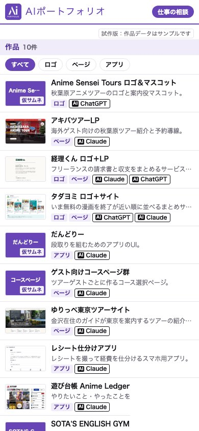
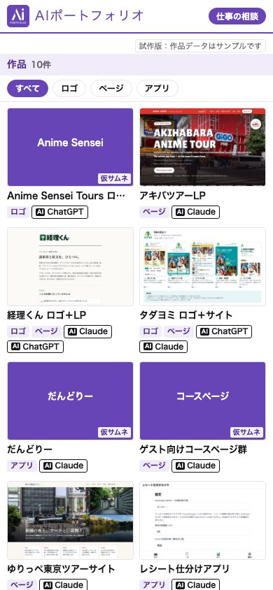
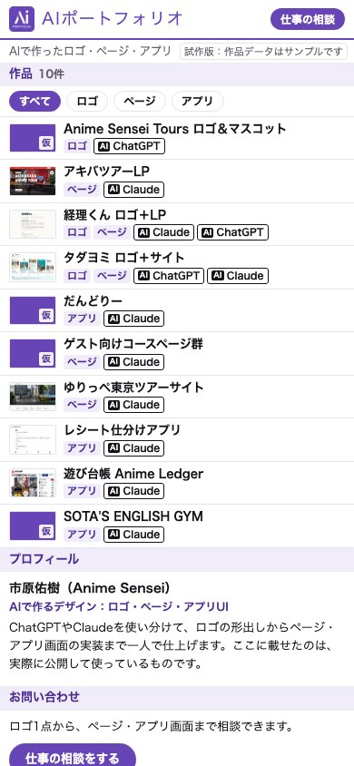
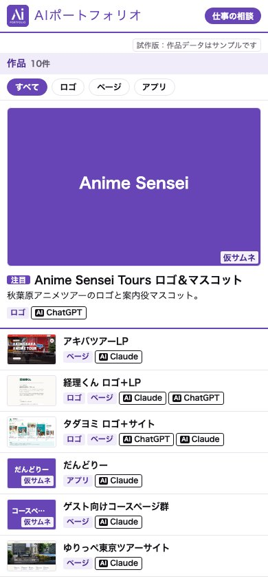
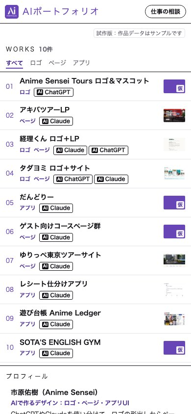

AIポートフォリオ追加5案の見比べ
土台はv1コンパクト・リストで確定。ヒーローに作品サムネが流れる追加5案（v6〜v10）。
試作版：作品データはサンプルです追加5案：v1＋流れるヒーロー

v6全面ヒーロー
ヒーロー全面に大きなサムネが1段流れ、暗幕の上にロゴ・タイトルを重ねる
開く →
v7細い帯
ヘッダー直下に小さなサムネの帯が1段だけ流れる。リストまでの距離が最短
開く →
v82段逆方向
薄紫の地に2段。上は左へ、下は右へ、逆向きにすれ違う
開く →
v9文字組
白く沈めた白黒の流れの上に「ロゴ・ページ・アプリ」を大きく置く
開く →
v10リストを磨く
流れは小さく遅く控えめ。行の余白・区切り線・見出しを整えたリスト
開く →
第1段階の5案

v1コンパクト・リスト
タダヨミv3の文法そのまま。小サムネ＋1行タイトル＋一言＋タグ2種の行リスト（基準案）
開く →
v2コンパクト＋グリッド
サムネを少し大きめにした2列。行リストとグリッドの中間で、密度は落としすぎない
開く →
v3超コンパクト
密度最大。最小サムネと2段の行で、10作品がほぼ1画面に収まる
開く →
v4コンパクト特集
先頭の1作品だけ大きく「注目」として扱い、残りはコンパクトリスト
開く →
v5コンパクト・ミニマル
罫線と文字で見せる。番号＋作品名の行で、サムネは右端に小さく
開く →
全案共通
- 土台はタダヨミ v3（コンパクト型）：48px級の薄いヘッダー・1行タイトル・小サムネの行
- ヘッダーは確定ロゴ（アプリアイコン型・正本画像をそのまま縮小）＋サイト名「AIポートフォリオ」＋相談ボタン
- 作品カード：サムネ＋タイトル＋担当範囲タグ（紫の塗り）＋使用AIタグ（黒の細枠・AIマーク付き）
- すべて／ロゴ／ページ／アプリのチップで絞り込み。プロフィール欄と問い合わせ導線つき
- v6〜v10：ヒーローの流れは実スクショのある作品だけ（仮サムネは流さない）。1周90〜140秒のゆっくりした横流れ、動きを減らす設定の端末では止まる
- データは data.json に分離。プロフィール名は data.json の profile.name 1か所で差し替え。配色は紫＋白＋黒